Birth of a Star
Here, Mariko Mori adopts a computer generated fictional persona, based loosely on a contemporary TV talent show. It comments on the trend of ready-made fame, using artificial personas to sell a pop culture "brand" while also mimicking aspects of japanese pop culture and technology trends.
The use of photo manipulation to tweak various parts of her appearance calls to mind the use of digital maipulation in videos and photography today to shape what we see.
An Acted Singer in a World of Acted Fame
[Birth of a Star was made in 1995, but the story of a computer generated pop star personality tells a story that feels like a prediction of certain aspects of pop culture now. I imagine an actor playing the part of pop star at the whims of a computer, told by a machine the words to sing and say according to what is most profitable- And I relate that to algorithm driven media on the internet, from click-harvesting news sites to shock-value youtubers to social media influencers selling "the good life."]
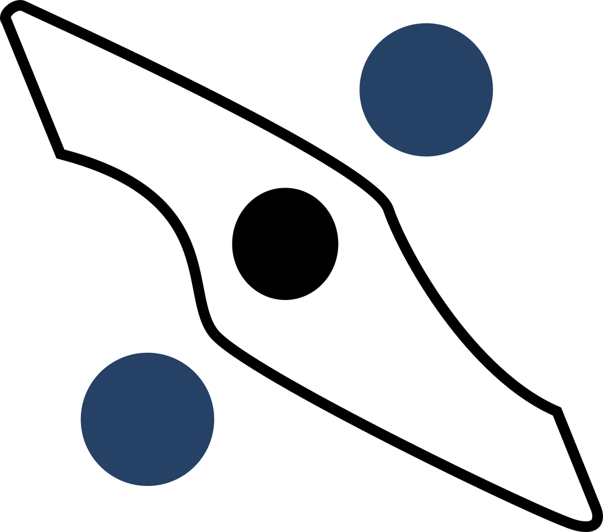

Mariko Mori's Life
TEXT TAKEN DIRECTLY FROM WIKIPIEDIA, NOT MY WORK
Mariko Mori was born in Tokyo, Japan in 1967. She comes from a wealthy family; her father is an inventor and technician, and her mother is a historian of European Art.
While studying at Bunka Fashion College in Tokyo in the late 1980s, Mori worked as a fashion model. In 1989, she moved to London to study at the Byam Shaw School of Art and then the Chelsea College of Art and Design, from where she graduated in 1992. After graduating, she moved to New York City and participated in the Whitney Independent Study Program at the Whitney Museum of American Art.
Gallery of Past Works
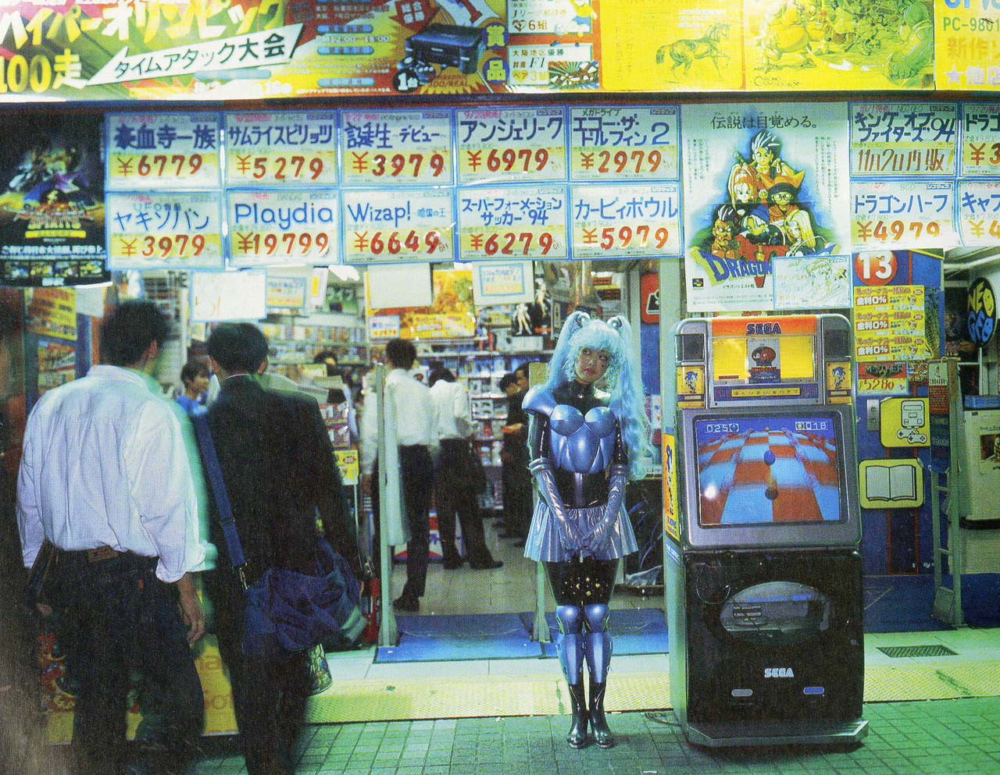
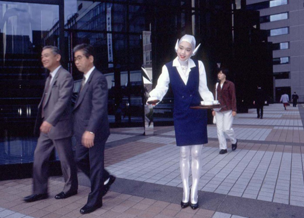
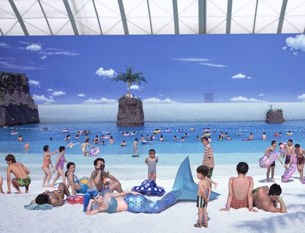
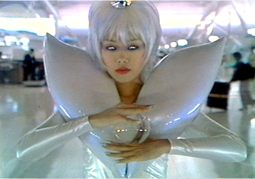
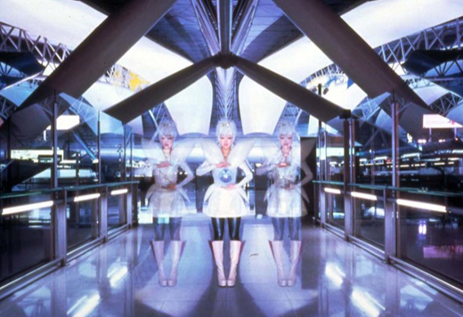
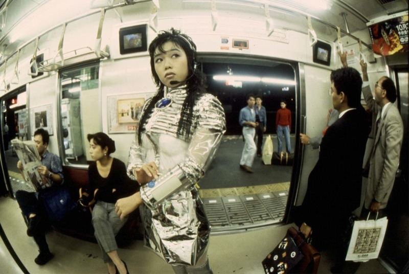
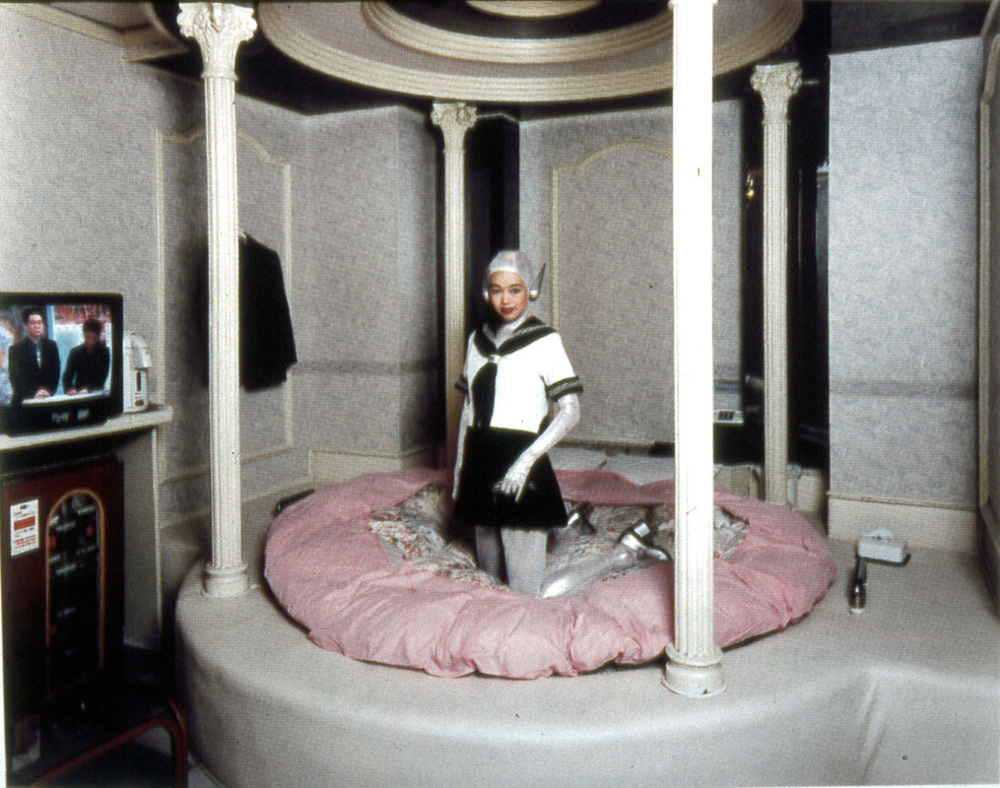
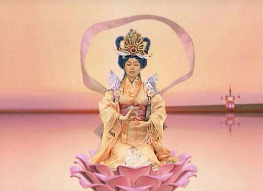
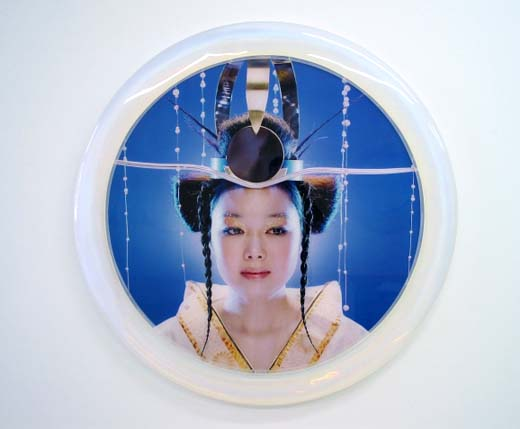
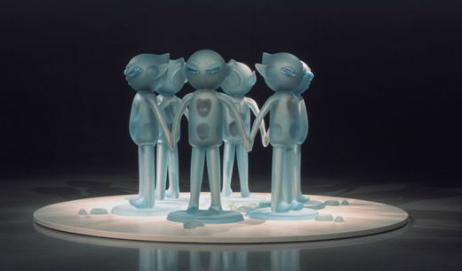